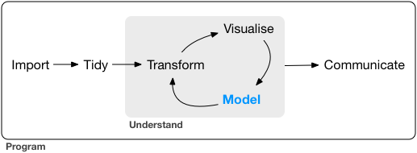
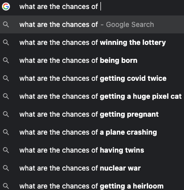
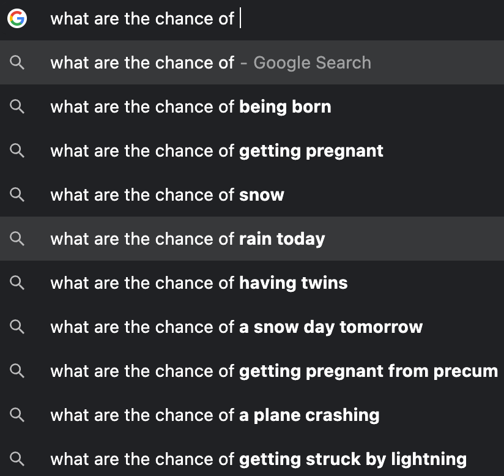
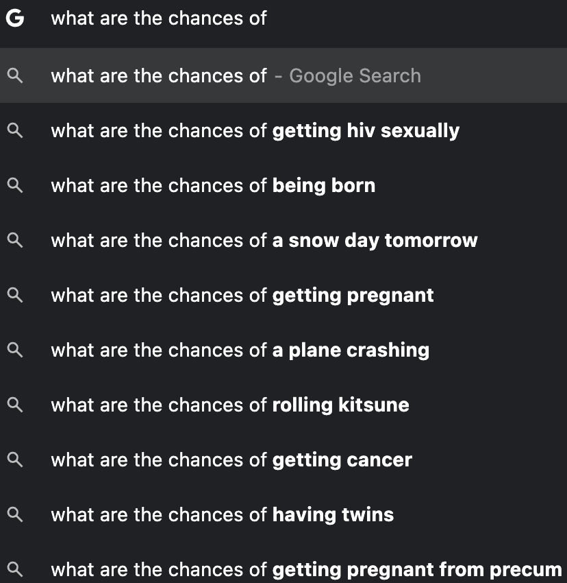
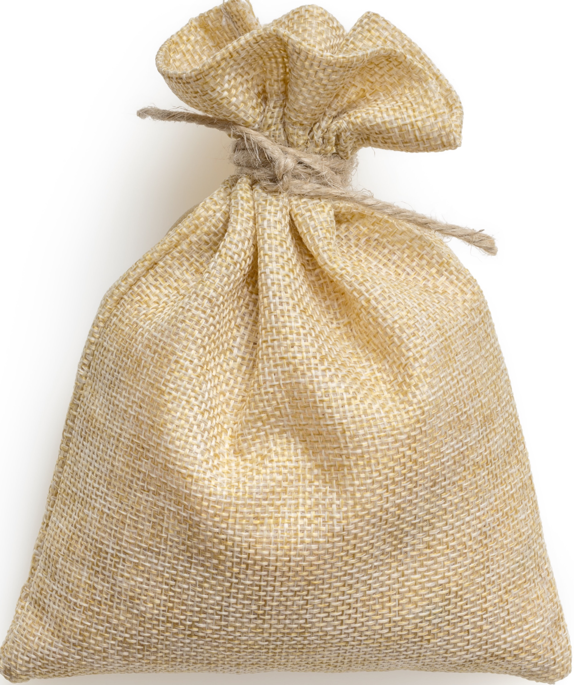
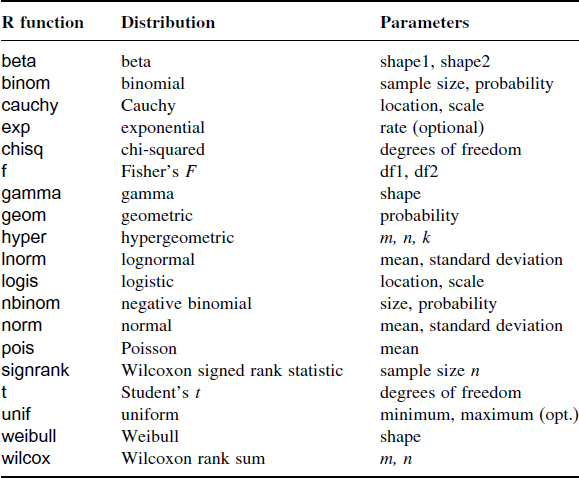
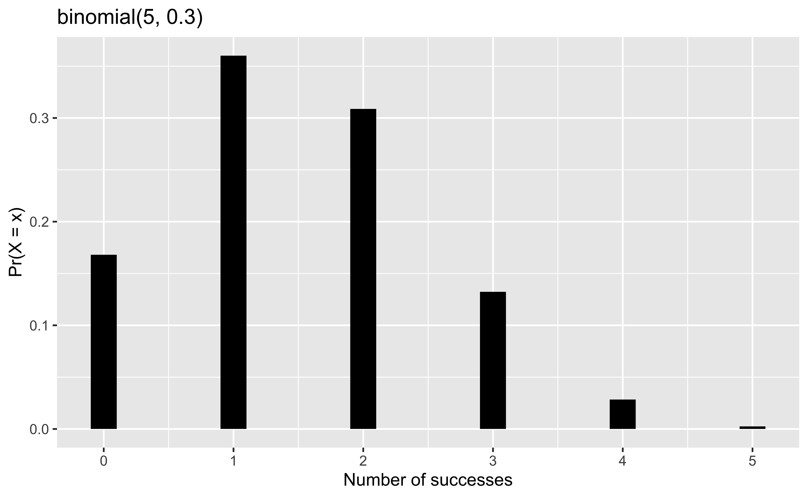
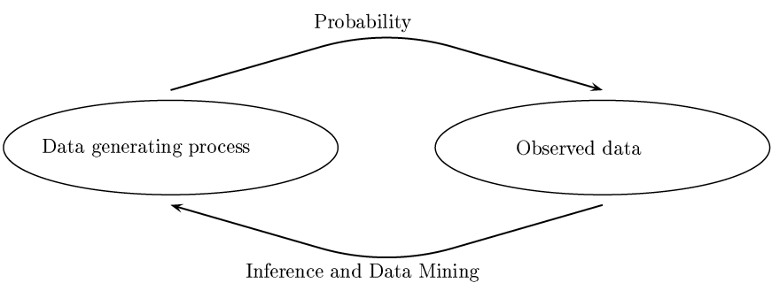
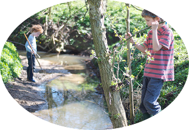

Probability and Statistics 🎲
MATH/COSC 3570 Introduction to Data Science
Why Study Probability
- We live in a world full of chances and uncertainty!
Mar 29, 2022

Mar 22, 2023

Mar 18, 2024



Why Study Probability
Probability is the study of chance, the language of uncertainty.
-
We could do data science without any probability involved. However, what we can learn from data will be much limited. Why?
Every time you collect a data set, you obtain a different one. Your data are affected by some chance or random noises!
Represent our uncertainty and ignorance about some event happening.
Knowledge of probability is essential for data science, especially when we want to quantify uncertainty about what we learn from our data.
- Probability is the study of chance, the language of uncertainty.
- If you wanna study chance or uncertainty formally and rigorously, you cannot do it without probability involved.
- We could do data science without any probability involved. However, what we can learn from data will be much limited. Why?
- Every time you collect a data set, you obtain a different one. Your data point is like a random variable that follows some distribution. Or your data are sampled from some population associated with some probability distribution.
- Your data are affected by chance in some way!
- Knowledge of probability becomes essential for data science, especially when we want to quantify uncertainty about what we learn from our data. We’ll talk more about how to quantify uncertainty about the accuracy of our estimators or predictions in the next lecture. OK.
Probability as Relative Frequency
The probability that some outcome of a process will be obtained is the relative frequency with which that outcome would be obtained if the process were repeated a large number of times.
-
Example:
- toss a coin: probability of getting heads 🪙
- pick a ball (red/blue) in an urn: probability of getting a red ball 🔴 🔵
. . .
Frequency Relative Frequency
Heads 4 0.4
Tails 6 0.6
Total 10 1.0
---------------------
Frequency Relative Frequency
Heads 512 0.51
Tails 488 0.49
Total 1000 1.00
---------------------- If we repeat tossing the coin 10 times, the probability of obtaining heads is 40%.
- If 1000 times, the probability is 51.2%.
- There are more than one way to define a probability, and one common way is to view probability as relative frequency.
- And the definition is as follows.
- The probability that some outcome/event of a process/experiment will be obtained is the relative frequency with which that outcome would be obtained if the experiment were repeated a large number of times under similar (identical theoretically) conditions.
- Mathematically, we actually require infinite number of repetitions and identical condition.
- Here are examples whose probability can be interpreted as relative frequency.
- Suppose we toss or flip a coin, we can ask what’s the probability of getting heads.
- Or if the experiment is picking a ball (red/blue) in an urn, we can ask what’s the probability of getting heads.
- Take tossing a coin as example. To get the probability of getting heads or least the approximate of it. We can toss the coin many times, and then count the number of times that heads shows up, and get the relative frequency.
- So here, if I toss a coin 10 times, the relative frequency is 0.4, and so the probability of getting heads is approximately 0.4.
- And if I toss a coin 1000 times instead, the approximate probability becomes 51.4%.
Issues of Relative Frequency
- 😕 How large of a number is large enough?
. . .
- 😕 Meaning of “under similar conditions”
. . .
- 😕 The relative frequency is reliable under identical conditions?
. . .
- 👉 We only obtain an approximation instead of exact value.
. . .
- 😂 How do you compute the probability that Chicago Cubs wins the World Series next year?

- This relative frequency definition of probability actually has some issues.
- How large of a number is large enough? is 100 large enough, 1000? We actually don’t know, and this is case by case, for some complicated calculations, we need huge number to get a good approximation
- Meaning of “under similar conditions” is unclear. We may not be able to have similar conditions every time we toss a coin. (air flow, the way of tossing a coin)
- The relative frequency is reliable under identical conditions? Maybe a very skilled person can toss a fair coin in a way that heads always shows up. In this case, is the relative frequency reliable? We don’t know.
- We only obtain an approximation instead of exact value. because we never be able to repeat the experiment infinite number of times.
Monte Carlo Simulation for Categorical Data
- We get a bag of 5 balls colored in red or blue.
Without peeking at the bag, how do we approximate the probability of getting a red ball?

. . .
Monte Carlo Simulation: Repeat drawing a ball at random a large number of times to approximate the probability by the relative frequency of getting a red ball.
. . .
. . .
So how many red balls in the bag?
- A so-called Monte Carlo Simulation demonstrate the idea of relative frequency as an approximation to a probability.
- Suppose we have 2 red balls and 3 blue ones in a bag. We wanna know what is the probability of getting a red ball?
- If each ball is equally likely to be chosen (picking at random), apparently, \(Pr(red) = 0.4\). # draw a ball at random from bag_balls, a # vector of length 5 with value red/blue
- The idea of Monte Carlo Simulation: is that We repeat the experiment (drawing a ball) a large number of times to obtain the relative frequency of red ball to approximate the probability of getting a red ball, which is exactly what we do for tossing a coin before.
- The code is shown right here.
- First we can use rep() function to generate the bag that has 2 red balls and 3 blue balls.
- To draw a ball at random, we can use the function sample(). It produces one random outcome.
- To do a Monte Carlo Simulation, we can use replicate() function, which allows us to repeat the same job number of times.
- So here, I repeatedly draw a ball 10000 times.
- Finally, we can check the frequency table or frequency distribution using table() function.
- To get the relative frequency, just divided by the total number of repetitions.
- You can see that the result of MC simulation approximates the true probability very well.
Random Seed set.seed()
bag_balls[1] "red" "red" "blue" "blue" "blue". . .
- When doing sampling, we use random number generators, and results vary from sample to sample.
. . .
- To ensure the results are the same every time we do sampling, set the random seed to a specific number by
set.seed()
[1] "blue" "red" "blue"[1] "blue" "red" "blue"- When we do sampling, we use random number generators in the computer language, and sampling results vary from sample to sample. This time you get red, next time you get blue.
- To ensure the results are exactly the same every time you do sampling, set the R random seed to a specific number by
set.seed() - For example, if you set the seed at 1000, then every time you draw a ball, the ball is always blue.
With and without replacement
sample(bag_balls, 6)
# Error in sample.int(length(x), size, replace, prob):
# cannot take a sample larger than the population when 'replace = FALSE'. . .
sample(bag_balls, 6,
replace = TRUE)[1] "blue" "blue" "blue" "blue" "blue" "blue". . .
mc_sim_rep
blue red
0.59 0.41 - The sample() function can actually draw lots of balls. But be careful about the with and without replacement issue.
- The default setting is draw without replacement.
- So when we try to draw 6 balls at once, it renders an error, saying cannot take a sample larger than the population when ‘replace = FALSE’. Basically we only 5 balls, without replacement, once a ball is drawn, the ball is out of bag, and only 4 balls remain in the bag. So without replacement, we can at most draw 5 balls, which is the entire population.
- And if we wanna draw more than 5 times from the same bag, we got to specify replace = TRUE.
- And we can actually do the MC simulation using just the sample() function like sample(balls, size = B, replace = TRUE)
- This means that we return the ball back to the bag after selecting it, and we repeatedly draw a ball continually B times basically under the same conditions.
- Not surprisingly, we get results very similar to those previously obtained using replicate() function.
Normal (Gaussian) Distribution \(N(\mu, \sigma^2)\)
- Density curve

- Normal Distribution is also called Gaussian distribution.
- It has two parameters that determine its density function and its density curve or distribution shape.
- One is its mean \(\mu\), the other variance \(\sigma^2\).
- It has a bell-shaped density curve symmetric about it mean.
Draw Random Values from \(N(\mu, \sigma^2)\)
-
rnorm(n, mean, sd): Draw \(n\) observations from a normal distribution with meanmeanand standard deviationsd.
## the default mean = 0 and sd = 1 (standard normal)
rnorm(5)[1] -1.033 0.311 -0.881 0.022 1.657. . .
- \(100\) random draws from \(N(0, 1)\)

- We use
rnorm(n, mean, sd)to draw n observations from the normal distribution with meanmeanand standard deviationsd. - the default distribution is standard normal (mean is 0 and sd is 1)
- So we can easily draw normal samples as many as we want.
- All those red points are random draws from the standard normal.
- You can see that most of the points are around the mean because the density around the mean is higher.
- Also, we can see when we draw normal samples, it is very difficult to get a sample with a very extreme value because its corresponding density value is quite small.
- Therefore, we tend to underestimate the population variance if we use the sample data to estimate it. And that’s one of the reason why we divided by n - 1 in the sample variance formula to sort of correct this underestimation.
Histogram of Normal Data (n = 20)
nor_sample <- rnorm(20)
- We talked about this before. In statistics, we hope the sampled data to be as representative of population as possible.
- Suppose the population is normal. If the sample is a random sample, we hope the sample size to be large. The larger the sample size, the more representative of population the sample is.
- Here, the sample size is just 20. And you can see the sample data does not look very normal.
Histogram of Normal Data (n = 200)
nor_sample <- rnorm(200)
- When n = 200, the sample start looking like a normal distribution.
Histogram of Normal Data (n = 5000)
nor_sample <- rnorm(5000)
- When n = 5000, the sample is very representative of its population
Compute Normal Probabilities
-
dnorm(x, mean, sd)to compute the density value \(f(x)\) (NOT probability) -
pnorm(q, mean, sd)to compute \(P(X \leq q)\) -
pnorm(q, mean, sd, lower.tail = FALSE)to compute \(P(X > q)\) -
pnorm(q2, mean, sd) - pnorm(q1, mean, sd)to compute \(P(q_1\leq X \leq q_2)\)

- We can use
dnorm(x, mean, sd)to compute the density value \(f(x)\) (NOT probability) -
pnorm(q, mean, sd)to compute \(P(X \leq q)\) -
pnorm(q, mean, sd, lower.tail = FALSE)to compute \(P(X > q)\) -
pnorm(q_1, mean, sd) - pnorm(q_2, mean, sd)to compute \(P(q_1\leq X \leq q_2)\)
Normal Quantiles
To get the p-th percentile (quantile), the normal variable value \(q\) given the cumulative probability \(p\), we use
qnorm(p, mean, sd).Find a normal variable value \(q\) so that \(P(X\leq q) = p\).
qnormis the opposite ofpnorm.
- To get the p-th percentile (quantile), the normal variable value \(q\), given the cumulative probability \(p\), we use
qnorm(p, mean, sd). - We find \(q\) such that \(P(X\leq q) = p\).
-
qnormis the opposite ofpnorm. -
qnormgives you a normal r.v. value,pnormgives you a probability.
Distributions and Their R Function

- Here shows other R functions for computing other distributions. Because each distribution has its own parameters, when you use it, remember to specify the parameter values in function arguments.
Normal Curve
ggplot() +
xlim(-5, 5) +
geom_function(fun = dnorm, args = list(mean = 2, sd = .5), color = "blue")
18-probability
In lab.qmd ## Lab 18 section,
- Plot the probability function \(P(X = x)\) of \(X \sim \text{binomial}(n = 5, \pi = 0.3)\).
To use ggplot,
- Create a data frame saving all possible values of \(x\) and their corresponding probability using
dbinom(x, size = ___, prob = ___).
# A tibble: 6 × 2
x y
<int> <dbl>
1 0 0.168
2 1 0.360
3 2 0.309
4 3 0.132
5 4 0.0284
6 5 0.00243
2. Add geom_col()

- scale_x_continuous(breaks = seq(0, 5, by = 1))
Probability vs. Statistics
- Probability : We know the process generating the data and are interested in properties of observations.
- Statistics : We observed the data (sample) and are interested in determining what is the process generating the data (population).

Terminology
Population (Data generating process): a group of subjects we are interested in studying
Sample (Data): a (representative) subset of our population of interest
Parameter: a unknown fixed numerical quantity derived from the population 1
Statistic: a numerical quantity derived from a sample
Common population parameters of interest and their corresponding sample statistic:
| Quantity | Parameter | Statistic (Point estimate) |
|---|---|---|
| Mean | \(\mu\) | \(\overline{x}\) |
| Variance | \(\sigma^2\) | \(s^2\) |
| Standard deviation | \(\sigma\) | \(s\) |
| proportion | \(p\) | \(\hat{p}\) |
- First just review some terminologies.
- A Populationis a group of individuals or objects we are interested in studying. It could be as small as a single family. Other examples are all Marquette students, all Marquette faculty, all American people, or all people in the world.
- A Sample is a (representative) subset of our population of interest.
- An important word here is representative. The sample should look like its population. The more alike, the better for the accuracy of statistical inference. So if your population is all people in the US. The sample collected in Wisconsin is not representative at all. If your population is all Marquette students, the sample collected from computer science is not representative. The sample should include all different majors and years that have proportions similar to the proportions of all students. Right.
- A Parameter a unknown fixed numerical quantity derived from the population
- A Statistic: a numerical quantity derived from a sample
- One goal of statistical inference is to estimate population parameters using our sample data, or statistics calculated from our sample data. (proportion of fraternity/sororities)
Point Estimation
The one single point used to estimate the unknown parameter is called a point estimator.
. . .
-
A point estimator is any function of data \((X_1, X_2, \dots, X_n)\) (Before actually being collected).
- Any statistic is a point estimator.
A point estimate is a value of a point estimator used to estimate a population parameter. (A value calculated by the collected data).
Sample mean \((\overline{X})\) is a statistic and a point estimator for the population mean \(\mu\).
- We used data from samples to calculate sample statistics, which can then be used as (point) estimates for population parameters.
- For example, suppose \(X_i \sim N(\mu, \sigma^2)\), we use sample mean \(\overline{X}\) as an estimator for population mean \(\mu\).
- It can be shown that \(\overline{X}\) is the best estimator for \(\mu\) in some sense. (MATH 4710)
- But here is a question. What is the downside to using point estimates?
- If you just use one single number to estimate another number, with pretty high chance, the two numbers will not be equal, due to randomness of your sample and the sample may not be representative enough.
Point Estimates Are Not Enough
If you want to estimate \(\mu\), do you prefer to report a range of values the parameter might be in, or a single estimate like \(\overline{x}\)?
If you want to catch a fish, do you prefer a spear or a net?


- Due to variation of \(\overline{X}\), if we report a point estimate \(\overline{x}\), we probably won’t hit the exact \(\mu\).
- If we report a range of plausible values, we have a better shot at capturing the parameter!
- If you want to catch a fish, do you prefer a spear or a net?
- Unless you are an expert spear fisher, I guess you would prefer using a net, right? Because you are more likely to actually catch the fish than if you are actually fishing with a spear.
Confidence Intervals
A plausible range of values is called a confidence interval (CI).
To construct a CI we need to quantify the variability of our sample mean.
-
Quantifying this uncertainty requires a measurement of how much we would expect the sample statistic to vary from sample to sample.
- That is the variance of the sampling distribution of the sample mean!
Do we know the sampling distribution of \(\overline{X}\)?
- By CLT, \(\overline{X} \sim N(\mu, \frac{\sigma^2}{n})\) regardless of what the population distribution is.
👉 The larger variation of \(\overline{X}\) is, the wider the CI for \(\mu\) will be.
- The variability of the sample mean determines the size of CI.
- This range depends on how precise and reliable our \(\overline{X}\) is as an estimate of \(\mu\).
- If the variation of our sample mean is pretty large, meaning that every time we collect a sample, the sample mean varies a lot from one to another, then we are more uncertain about the value of \(\mu\).
- And that mean the plausible range of values for \(\mu\) will be pretty wide, or the CI will be much wider.
Confidence Intervals
A plausible range of values for \(\mu\) is called a confidence interval (CI).
Do we know the sampling distribution of \(\overline{X}\)?
- Central Limit Theorem: \(\overline{X} \sim N(\mu, \frac{\sigma^2}{n})\) regardless of what the population distribution is.

\((1 - \alpha)100\%\) Confidence Interval for \(\mu\)
- With \(z_{\alpha/2}\) being \((1-\alpha/2)\) quantile of \(N(0, 1)\), \((1 - \alpha)100\%\) confidence interval for \(\mu\) is \[\left(\overline{X} - z_{\alpha/2} \frac{\sigma}{\sqrt{n}}, \,\, \overline{X} + z_{\alpha/2}\frac{\sigma}{\sqrt{n}}\right)\]
. . .
What if \(\sigma\) is unknown?
. . .
- \((1 - \alpha)100\%\) confidence interval for \(\mu\) becomes \[\left(\overline{X} - t_{\alpha/2, n-1} \frac{S}{\sqrt{n}},\,\, \overline{X} + t_{\alpha/2, n-1}\frac{S}{\sqrt{n}}\right),\] where \(t_{\alpha/2, n-1}\) is the \((1-\alpha/2)\) quantile of Student-t distribution with degrees of freedom \(n-1\).
Interpreting a 95% Confidence Interval
- We are 95% confident that blah blah blah . . .
If we were able to collect our sample data many times and build the corresponding confidence intervals, we would expect about 95% of those intervals would contain the true population parameter.
. . .
However,
We never know if in fact 95% of them do, or whether any particular interval contains the true parameter! 😱
❌ Cannot say “There is a 95% chance/probability that the true parameter is in the confidence interval.”
In practice we may only be able to collect one single data set.
- We usually say we are 95% confident that blah blah blah. What do we mean by that?
- Imagine that you ask your friends to go to a party this weekend, and they say oh I’m 95% confident that I like. You’d be like, what’s wrong with you, i’m never inviting you.
- When we say We are 95% confident, it has a very specific meaning.
- It means that Suppose we were able to collect our sample dataset many times and build the corresponding confidence intervals.
- We would expect about 95% of those intervals would contain the true population parameter.
- However, we never know if in fact 95% of them do, or whether any particular interval contains the true parameter (maybe none of them do!). Because we don’t know the true value is.
- We cannot say
“There is a 95% chance/probability that the true parameter is in the confidence interval.”
95% Confidence Interval Simulation
\(X_1, \dots, X_n \sim N(\mu, \sigma^2)\) where \(\mu = 120\) and \(\sigma = 5\).

Simulate 100 CIs for \(\mu\) when \(\sigma\) is known
Algorithm
- Generate 100 sampled data of size \(n\): \((x_1^1, x_2^1, \dots, x_n^1), \dots (x_1^{100}, x_2^{100}, \dots, x_n^{100})\), where \(x_i^m \sim N(\mu, \sigma^2)\).
- Obtain 100 sample means \((\overline{x}^1, \dots, \overline{x}^{100})\).
- For each \(m = 1, 2, \dots, 100\), compute the corresponding confidence interval \[\left(\overline{x}^m - z_{\alpha/2} \frac{\sigma}{\sqrt{n}}, \overline{x}^m + z_{\alpha/2}\frac{\sigma}{\sqrt{n}}\right)\]

mu <- 120; sig <- 5
al <- 0.05; M <- 100; n <- 16
set.seed(2026)
x_rep <- replicate(M, rnorm(n, mu, sig))
xbar_rep <- apply(x_rep, 2, mean)
E <- qnorm(p = 1 - al / 2) * sig / sqrt(n)
ci_lwr <- xbar_rep - E
ci_upr <- xbar_rep + E
plot(NULL, xlim = range(c(ci_lwr, ci_upr)), ylim = c(0, 100),
xlab = "95% CI", ylab = "Sample", las = 1)
mu_out <- (mu < ci_lwr | mu > ci_upr)
segments(x0 = ci_lwr, y0 = 1:M, x1 = ci_upr, col = "navy", lwd = 2)
segments(x0 = ci_lwr[mu_out], y0 = (1:M)[mu_out], x1 = ci_upr[mu_out], col = 2, lwd = 2)
abline(v = mu, col = "#FFCC00", lwd = 2)- Al right. So here illustrates the idea of confidence intervals. Suppose the true population mean is 120. And I draw a sample of the same size 100 times, and calculate 100 CIs accordingly.
- Because each sample is different, we are gonna have a different CI as well.
- Here 4 of them are not covering the true population mean.
- Again the CI varies from sample to sample. We will not get exactly 5 CIs not covering the true population mean among 100 CIs, but about 5 of them do. It could be 3, it could be 7.
19-Confidence Interval
In lab.qmd ## Lab 19 section,
- Run the code I give you for simulating 100 \(95\%\) CIs. Change the random generator seed to another number you like.
set.seed(a number you like) Birthday? Lucky number?- How many CIs do not cover the true mean \(\mu\)?

Random Generator
import numpy as np-
random.Generator.choice(): Generates a random sample from a given array
bag_balls = ['red'] * 2 + ['blue'] * 3
## set a random number generator
rng = np.random.default_rng(2025) ## R set.seed()
## sampling from bag_balls
rng.choice(bag_balls, size = 6, replace = True) ## R sample()array(['blue', 'blue', 'blue', 'red', 'blue', 'blue'], dtype='<U4'). . .
rng.normal(loc=0.0, scale=1.0, size=5) # R rnorm()array([-1.12919278, -2.44186665, 0.7653914 , -0.75970935, 0.26699619])Normal Distribution from SciPy
library(reticulate); py_install("scipy")import scipy
from scipy.stats import norm. . .
x = 0
norm.pdf(x, loc=0, scale=1) ## R dnorm()0.3989422804014327. . .
norm.cdf(x, 0, 1) ## R pnorm()0.5. . .
q = 0.95
norm.ppf(q, 0, 1) ## Percent point function. R qnorm() 1.6448536269514722. . .
norm.rvs(loc=0, scale=1, size=1) ## R rnorm()array([-0.19802244])Normal Curve Plotting
import matplotlib.pyplot as pltmu = 100
sig = 15
x = np.arange(-4, 4, 0.1) * sig + mu
hx = norm.pdf(x, mu, sig)
plt.plot(x, hx)
plt.xlabel('x')
plt.ylabel('density')
plt.title('N(100, 15^2)')
plt.show()
Footnotes
Another methodology called Bayesian statistics assumes parameters are unknown but random.↩︎